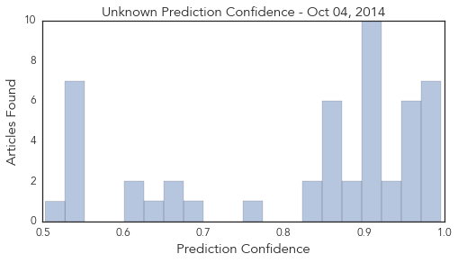

Toggle navigation
Early Warning
Daily Alerts
Unknown
Oct 04, 2014
Compare to:
-
Dengue Fever
Hemmorhagic Fever
Mold/Fungal Infection
Influenza
Meningitis
Pertussis / Whooping Cough
Middle East Respiratory Syndrome
Cholera
Hepatitis
Chikungunya
Yellow Fever
Bubonic Plague
West Nile Virus
Swine Flu
Ebola
Measles
Mumps
30 Day Trends
Web: 0
alerts
, 0
warnings
Twitter: 0
alerts
, 0
warnings
Top Articles:
Showing top 50 articles...
0.995
Jersey toddler Eli Waller dead from enterovirus 68 still a mystery
0.995
Enterovirus' Role in NJ Child's Death Unclear: Officials
0.993
Respiratory virus seen in 4 deaths Republican American
0.990
B.C. reports two enterovirus cases in child and teen with polio-like symptoms
0.982
One case of enterovirus 68 confirmed in Raleigh County, three more total across state
0.981
New Jersey preschooler who died confirmed to have been infected by Enterovirus D68 as over 500 children across the country are diagnosed with the illness
0.976
EV-D68 Reaches San Francisco, Five Cases of Enterovirus Infection Reported
0.971
Enterovirus 68 kills N.J. boy
0.967
NJ Preschooler's Death Blamed on Enterovirus 68
0.963
What Parents Need to Know
0.963
Health Department Denies Misinforming Cumberland School Officials on Enterovirus
0.960
N.J. child dies, tests positive for enterovirus, while CHOP reports three cases of muscle weakness
0.951
CDC: 4-Year-Old NJ Boy Who Died Had Enterovirus D68 « CBS New York
0.943
NJ Child Died from Enterovirus D68: Officials
0.934
CDC Confirms Hamilton, New Jersey Boy, 4, Died With Enterovirus D68 « CBS New York
0.918
Health officials in B.C. urge parents to watch for signs of enterovirus now that kids in school
0.917
Chicago Tribune
0.917
Chicago Tribune
0.917
Chicago Tribune
0.917
Chicago Tribune
0.917
Chicago Tribune
0.917
Chicago Tribune
0.904
Enterovirus D68 case confirmed in C-K
0.903
Health officials won’t say what role enterovirus played in death of NJ 4-year-old
0.901
Cluster of cases with polio-like symptoms baffles doctors
0.878
New Jersey boy went to bed fine, didn’t wake up — due to enterovirus D68
0.876
New Jersey district tracking sick students after child dies of enterovirus D68
0.866
U.S. Ebola patient now in critical condition
0.866
Two passengers escorted from Newark flight on Ebola concern
0.866
At least four killed in suicide attack in Pakistan city of Quetta
0.863
E. coli detected for the second time in water supply near Seattle
0.858
N.J. preschooler died of enterovirus D68
0.848
'Fine' NJ boy dies suddenly of enterovirus D68
0.837
Patient, healthcare worker treated for scabies at Dartmouth-Hitchcock Medical Center
0.827
Winter vomiting bug closes seven wards in hospitals across Scotland
0.753
Florence, KY Residents Suffering from Periodontal Disease are Invited to Explore the Benefits of Laser Gum Surgery with Dr. Ryan Estes
0.694
NJ Preschoolers Death Attributed to Enterovirus D68
0.673
Second Child to Receive Aggressive HIV Treatment Out of ‘Remission’ Growing Your Baby
0.661
Save your sacrificial animals from ‘Congo Fever’
0.649
Cumberland girl dies from infection associated with enterovirus
0.625
NewsroomAmerica: World Europe
0.615
Polio Cases In Pakistan Break 14-Year-Old Record As Militants Block Immunization
0.551
10 illegal water hydrants demolished
0.545
In Pictures: Major Muslim, Jewish holidays coincide
0.545
Pakistani Taliban pledges support for IS militants
0.545
Hong Kong protesters, police face off after night of clashes
0.545
Defying Hollande and France, ex-stepson to marry stepmum
0.539
HIV/AIDS Origins Traced to Kinshasa
0.539
HIV/AIDS Origins Traced to Kinshasa
0.503
Water pipe bursts at Scunthorpe General Hospital
Top Tweets:
No tweets found for Oct 04, 2014
Web/News Articles
Tweets
Article Locations
Article Confidences
